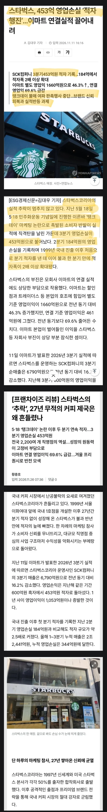

망해가는 스타벅스 근황
댓글
원래 1000원 이상 결제면 별 적립 해주던게
3000원 이상으로 바뀌면서 그때부터 잘 안가짐
기프티콘 -> 사이즈업 또는 교체로 별 모았으나
기프티콘 + 3000원 ??? 별 안주겠단 소리랑 뭐가 다름 ㅋㅋ
시즌별로 md 팔아먹는것도 예전에는
예쁘게 잘 뽑아서 자주 샀었는데
지금은 구려서 안사짐
영포티들은 신났어유!
이걸 말아쳐먹는 것도 재능이다...
스벅이 의자가 불편해
그래서 스벅 투썸 같이있으면 투썸으로 감
저거 영향이 없진 않겠지만 그냥 하향 추세에 역대급 불경기라 안먹는거임
1. 음료 퀄리티 측면 경쟁력 부족
2. 지점이 너무 많아짐, 희소성 떨어짐
3. 2와 더불어 인테리어나 이용 편의성 퀄리티 떨어지는 지점 많아짐
-> 기존 프리미엄 이미지 다까먹음
4. 스타벅스 굿즈 끝물, 이제 굿즈 별거없는거 사람들 다 알아서 잘안모음
5. 내수경제 상황때문에 저가커피 선호
운영상 찐빠 + 경제 상황 복합적인 문제로 골로가는거같음
브랜드 이만큼 구축해놓고 신세계에서 맡으면서 말아먹는것도 능력이네
정용진 대단하다
커피 비싸
의자 불편해
굿즈 중국산
진짜 이것도 재능이긴 하다
걍 먹을게없음
내 차이티라떼나 살려내라
그러게 그거 왜 사라짐???
예전엔 공간을 파는 느낌이었는데 요즘(이라는 것도 꽤 오래되긴 함) 새로 오픈한 매장 가보면 걍 회전율에 중점을 두었다는 게 보여서 다른 저가커피랑 차별점이 안 느껴짐
미국에선 여러 사람들 모일땐 커스텀 옵션이 워낙 많으니 스벅만한게 없는데, 어차피 한국은 데일리커피는 아아 통일이라 대체품이 너무 많은거같음. 그 커피맛만 따지면 스벅이 상위권은 아니고.
내 생각엔 오너리스크 지분이 제일 커보임
최근에 바닐라 아인슈페너 시켰는데 무슨 크림을 다 섞었는지 바닐라 라떼를 만들어서 주더라 미친ㅋㅋㅋ 망하는 놈들은 이유가 있음
TMI) 스타벅스란 이름은 소설 모비 딕의 등장인물인 스타벅 일등항해사에서 따온 것. 원래는 포경선 피쿼드호의 이름을 쓰려 했는데 어감이 더 좋은 것을 찾다가 스타벅스가 되었다고.
그리고 소설에서 피쿼드호는 침몰하고 스타벅도 목숨을 잃음
딱히 스벅을 피하는건 아닌데
요새 자주 안가게되네 나도
이제 한잔에 5000원 6000원 하는 커피는 매장애서 먹는거면 모를까 테이크아웃할 요인이 전혀 없지 돈아까움
지점을 너무 만들었어....... 조금만 장사된다 싶으면 근제에 만들고 또 건너편에 만들고 ..... 전자동 머신으로 초보나 장기근속자나 에스프레소 맛은 똑같아서 좋았는데 다른곳도 탬퍼가 좋은것들이 많이 나오니까 비슷해져서 꼭 스벅을 가야 할 이유가 점점 없어지는듯 ㅋ
스벅 매장 한 눈에 봐도 세련되고 깔끔해서 가장 잘 나가는 곳인 줄 알았는데
원랜 비싸도 편안하게 머물며 마시는커피니까 그리고 맛도있으니까그럴수있다생각했는데 의자라던가 불편해지고 다른커피브랜드품질이 올라오니까 장점이 둘다 사라짐
한 8-9년 전쯤엔 매일 갔었는데
이젠 그냥 원두랑 모카포트 하나 사서 내가 뽑아먹음
왠지 비싼 거 같고, 스벅 아니더라도 가성비 좋게 갈 카페 많으니까 굳이 안 가게 되는 느낌.
그냥 커피를 끊었음
ㅋㅋㅋㅋㅋ
두세시간 업무볼용으로는 감
커피는 흠 그럭저럭
그냥 저가커피숍이 너무 치고 올라와서 아니야 ? 투썸 할리스 같은데가 더 타격 큰걸로 아는데
스벅 dt 인프라가 너무 잘되어있어서 개인적으로 대체가 안됨